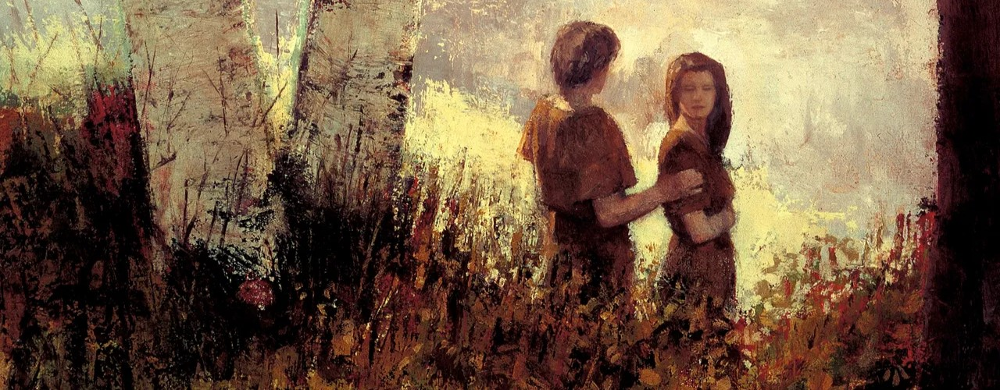

Fall of Adam and Eve
"Because of the Fall, we get to come to earth and can one day return to live with our Father in Heaven."
---Gospel Basics: The Fall Was Part of God's Plan
What is the fall of Adam and Eve?
The Fall of Adam and Eve was the first death of the spiritual, due to they decided to break the commandment with God. Heavenly Father and His beloved Son Jesus Christ cast them out of the garden of Eden. This caused Adam and Eve and their children to be separated from God both physically and spiritually. However, because of the fall of Adam and Eve, all people can have this opportunity to come to the earth. In order to “bring to pass the immortality and eternal life of man.
Why is the fall of Adam and Eve so important?
"And now, behold, if Adam had not transgressed he would not have fallen, but he would have remained in the garden of Eden. And all things which were created must have remained in the same state in which they were after they were created; and they must have remained forever, and had no end. And they would have had no children; wherefore they would have remained in a state of innocence, having no joy, for they knew no misery; doing no good, for they knew no sin. But behold, all things have been done in the wisdom of him who knoweth all things. Adam fell that men might be; and men are, that they might have joy." (2Nephi 2:21-25)
Because of the fall of Adam and Eve, we can gain physical bodies, the privilege to exercise our agency, and the opportunity to gain eternal life. On the contrary, if Adam and Eve choose to stay in the Garden of Eden, we will not be able to come to the earth. Also, we will not be able to gain new experiences and other privileges.